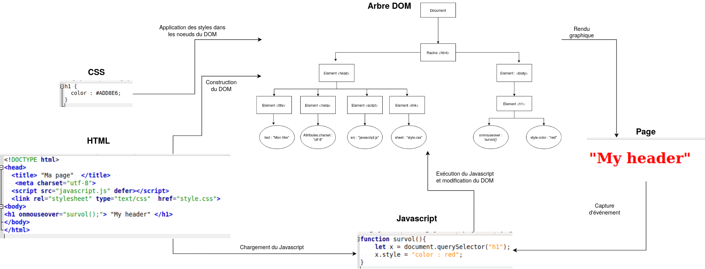

Crédits⚓︎
Ce cours est largement inspiré du chapitre 29 du manuel NSI de la collection Tortue chez Ellipse, auteurs : Ballabonski, Conchon, Filliatre, N'Guyen. J'ai également consulté le prepabac Première NSI de Guillaume Connan chez Hatier, la documentation en ligne de la fondation Mozilla https://developer.mozilla.org/fr/docs/Apprendre/JavaScript et le tutoriel de w3schools https://www.w3schools.com/js/default.asp.
Javascript et la programmation événementielle côté client⚓︎
:::cours Dans le chapitre précédent, on a présenté des exemples de pages Web dynamiques générées par des programmes en PHP ou Python. Chaque mise à jour de la page nécessite donc un nouveau cycle requête/réponse entre le client et le serveur. C'est indispensable s'il s'agit de modifier l'état d'une ressource côté serveur (une base de données par exemple), mais les changements peuvent n'être que temporaires et n'affecter que des éléments de la page côté client. C'est le cas de l'exemple déjà traité en PHP de la conversion d'unité pour une mesure de température.
[Javascript][Javascript] est un langage interprété répondant à ce besoin, qui s'exécute dans le navigateur du client. [Javascript][Javascript] s'est imposé depuis son apparition en 1995 dans le navigateur [Netscape][Netscape] comme le principal langage de développement Web en _frontend_ (côté client) et depuis une dizaine d'années, sa variante [Node.js][Node.js] concurence les langages de développement _backend_ (côté serveur) comme [PHP][PHP] ou [Python][Python].
Une page Web moderne, reçue par un client, comporte au moins trois composants logiciels :
* [HTML][HTML] pour la structure du document.
* [CSS][CSS] pour le paramétrage de l'apparence des éléments et leur positionnement.
* [Javascript][Javascript] pour la définition de programmes qui vont réagir à des événements déclenchés par l'utilisateur de la page et modifier la structure de données de la page ( éléments [HTML][HTML] et styles [CSS][CSS]) à travers l'[API][API] ^[Note : [API][API] est l'acronyme d'Application Programming Interface] nommée [DOM][DOM] ^[Note : [DOM][DOM] est l'acronyme de Document Object Model]. Le [DOM][DOM] est une représentation de l'ensemble de la structure de la page Web sous la forme d'un arbre : les noeuds sont les éléments [HTML][HTML] et ils ont une liste de propriétés : contenu, style, événements associés ... L'inspecteur des outils de développement, accessibles avec la touche `F12` dans un navigateur, permet de visualiser et modifier les propriétés des éléments du [DOM][DOM].
L'environnement d'exécution d'un code [Javascript][Javascript] est confiné à l'onglet de la page Web où il est chargé. Pour des raisons de sécurité il ne doit pas interagir avec d'autres pages ou des ressources du poste client. Par ailleurs, si on recharge la page auprès du serveur, l'environnement [Javascript][Javascript] est réinitialisé et les modifications de la page effectuées par un code [Javascript][Javascript] ne sont pas répercutées sur la page source disponible sur le serveur.
Le schéma ci-dessous illustre le fonctionnement du [Javascript][Javascript] qui correspond à un paradigme de [programmation événementielle][programmation événementielle].
:::

Premiers pas dans la console Javascript⚓︎
:::cours
Compléter ce tableau sur les opérateurs en [Javascript][Javascript] à partir de la page <https://developer.mozilla.org/fr/docs/Web/JavaScript/Guide/Expressions_et_Op%C3%A9rateurs>.
Opérateurs|Description
:--:|:--:
`=`|
`*`|
`/`|
`**`|
`==` ou `===` |
`!=` ou `!===`|
`&&` |
`||` |
`!`|
:::
:::exercice Ouvrir un nouvel onglet dans un navigateur Web.
1. Ouvrir la console [Javascript][Javascript] dans la fenêtre des outils de développement avec `F12` ou `CTRL + SHIFT + K` sous Firefox. On va exécuter de façon interactive, une séquence d'instructions [Javascript][Javascript] pour présenter quelques constructions élémentaires et propriétés du langage. Chaque instruction pourra modifier l'état du [DOM][DOM] et donc le rendu graphique de la page Web.
2. On commence par quelques manipulations de variables et calculs :
~~~javascript
>>> let a = 1
undefined
>>> (a * 3 + 1) ** 2 / 5 - 1
2.2
>>> (a * 3 + 1) ** 2 // commentaire !
16
>>> let b = "Hello"
undefined
>>> b + " World"
"Hello World"
>>> typeof(a)
"number"
>>> typeof(b)
"string"
>>> a = b + a
"Hello1"
>> typeof(a)
"string"
~~~
* Barrer les propositions fausses : [Javascript][Javascript] est à typage _(fort | faible)_ et _(dynamique | statique)_ et une variable égale à 5 se déclare avec _(let a = 5 | a = 5)_.
3. Examinons un exemple avec une fonction, une structure conditionnelle et une boucle. Dans la console, passer en mode éditeur multiligne avec `CTRL + B` et saisir le code ci-dessous :
~~~javascript
function valabs(x){
if (x < 0){
return -x;
}
else {
return x;
}
}
for (let i = -4; i < 5; i = i + 1){
if (valabs(i) > 2){
alert(i);
}
else {
console.log(i);
}
}
~~~
* Barrer les propositions fausses : en [Javascript][Javascript], les blocs d'instructions sont délimités par _(l'indentation | des accolades)_, les fonctions sont déclarées avec le mot clef _(def | function)_ et une boucle inconditionnelle sur les entiers entre 1 et 10 commence par l'instruction _( for k in range(1, 11) | for (let k = 1; k < 11; k = k + 1) )_
* Barrer les propositions fausses : la fonction `alert` affiche son paramètre dans _(une fenêtre pop-up | la console)_ tandis que la fonction `console.log` affiche son paramètre dans _(une fenêtre pop-up | la console)_.
:::
:::exercice
Javascript dispose de toutes les constructions permettant de progammer les mêmes algorithmes qu'en Python, mais s'il a été inventé par les développeurs de Netscape c'est pour manipuler les éléments HTML, à travers l'interface du DOM. Il existe plusieurs façons de capturer un élément HTML, la plus simple s'il s'agit d'un élément particulier est l'accès par son identifiant unique id (à condition qu'il soit défini).
Ouvrir un navigateur Web et charger la page https://frederic-junier.org/NSI/sandbox/bac.html. Le code source HTML de la page est donné ci-dessous :
~~~html
<!DOCTYPE html>
<head>
<title> "Bac à sable" </title>
<meta charset="utf-8">
<body>
<ul id="langages">
<li> HTML </li>
<li> CSS </li>
</ul>
</body>
</html>
~~~
1. Saisir successivement les instructions ci-dessous dans la console, observer ce qu'il se passe dans la page étape par étape. Caractériser le rôle de chaque instruction puis saisir des instructions qui permettent de modifier le contenu [HTML][HTML] et le style du second item de la liste.
~~~javascript
>>> let list = document.getElementById("langages")
undefined
>>> list.style.color = "red"
"red"
>>> let item1 = list.children[0]
undefined
>>> item1
<li>
>>> item1.innerHTML = 'HTML5'
"HTML5"
~~~
\
2. Saisir successivement les instructions ci-dessous dans la console, observer ce qu'il se passe dans la page étape par étape. Caractériser le rôle de chaque instruction puis saisir des instructions qui permettent de rajouter un quatrième item à la liste dont le contenu est [Kotlin][Kotlin].
~~~javascript
>>> let item3 = document.createElement("li")
undefined
>>> list.appendChild(item3)
<li>
>>> item3.innerHTML = "Javascript"
"Javascript"
~~~
3. Passer la console en mode mutliligne avec `CTRL + B` puis saisir et exécuter le code ci-dessous. Survoler la liste ou cliquer dessus avec la souris et observer ce qui se passe dans la page. Caractériser le rôle de chaque instruction en vous appuyant sur la lecture de l'article [https://developer.mozilla.org/fr/docs/Web/API/GlobalEventHandlers/onclick](https://developer.mozilla.org/fr/docs/Web/API/GlobalEventHandlers/onclick).
~~~javascript
function apparition(){
list.style.visibility = "visible";
}
function disparition(){
list.style.visibility = "hidden";
}
list.onmouseover = disparition ;
//le symbole ; est le séparateur d'instruction en Javascript
list.onmouseleave = apparition ;
list.onclick = function() { alert("Clic !") ; } ; //définition d'une fonction anonyme
~~~
4. Recharger la page avec `F5`. L'environnement [Javascript][Javascript] a-t-il été conservé ?
:::
Approfondissement : rédaction de scripts et gestionnaires d'événements⚓︎
:::exemple
Ouvrir un navigateur Web et accéder à la page <https://frederic-junier.org/NSI/sandbox/compteur-clic.html>.
On donne ci-dessous le code source de la page Web.
~~~html
<!DOCTYPE html>
<html lang="fr">
<head><!-- Début en-tête -->
<title>Compteur de clics </title>
<meta charset="utf-8">
<!-- Début script JS -->
<script>
let compteur = 0;
function suivant(){
compteur = compteur + 1;
let v = document.getElementById("valeur");
if (compteur <= 1) {
v.innerHTML = compteur + " clic";
}
else {
v.innerHTML = compteur + " clics";
}
}
function reinitialiser(){
compteur = 0;
let v = document.getElementById("valeur");
v.innerHTML = compteur + " clic";
}
</script> <!-- Fin script JS -->
</head><!-- Fin en-tête -->
<body><!-- Début corps -->
<h1>Compteur de clics en Javascript </h1>
<button onclick="suivant();">Clic !</button>
<br>
<span id="valeur">0</span>
<br>
<button onclick="reinitialiser();">Réinitialiser !</button>
</body><!-- Fin corps -->
</html>
~~~
1. On peut interagir avec la page en cliquant sur le bouton _Clic !_ puis réinitialiser le compteur en cliquant sur le bouton _Réinitialiser_.
2. Ouvrir l'onglet inspecteur dans la fenêtre des outils de développement et afficher la structure de la page comme ci-dessous.
* Repérer l'étiquette `event` attachée au bouton de contenu _Clic !_ et déplier son contenu.
\
* Pour cet élément `button`, l'attribut `onclick="suivant()"` a défini une fonction [Javascript][Javascript] `function onclick(event) {suivant();}` qui prend en paramètre un __événement utilisateur__ (ici un click) et réagit en appelant la fonction `suivant`. La fonction `suivant` est appelée __gestionnaire d'événement__.
* Le code de la fonction `suivant` se trouve dans la balise `<script>`. Placée dans l'en-tête, celle-ci rassemble tout le code [Javascript][Javascript] chargé dans la page.
* On a vu précédemment que la fonction est appelée dès qu'un événement `click` se produit sur le premier élément `<button>`. En examinant le code de `suivant`, on voit qu'un lien est d'abord créé entre l'élément `<span>` d'identifiant `"valeur"` et une variable [Javascript][Javascript] à l'aide d'une méthode [DOM][DOM] par l'instruction :
~~~javascript
let v = document.getElementById("valeur");
~~~
* Ensuite on peut manipuler l'élément [HTML][HTML] et modifier son contenu avec :
~~~javascript
v.innerHTML = compteur + " clic";
~~~
* La variable `compteur` est définie en dehors de `suivant` car c'est une variable globale. Les variables globales sont essentielles en [Javascript][Javascript], c'est l'un des défauts du langage.
* Identifier et analyser de même __le gestionnaire d'événement__ `click` qui est attaché au second élément `<button>`.
:::
:::exemple Ouvrir un navigateur Web et accéder à la page https://replit.com/@fredericjunier/1NSI-Javascript-Ex1-Eleve#index.html.
On arrive dans un environnement de développement Web en [HTML][HTML]/[CSS][CSS]/[Javascript][Javascript] sur la plateforme [https://repl.it](https://repl.it).
\
1. L'interface se divise en trois zones :
* À droite la fenêtre d'affichage du site et en-dessous une console [Javascript][Javascript].
* Au centre l'éditeur avec le fichier courant.
* À gauche l'explorateur de fichiers avec une séparation des trois composants logiciels nécessaires à l'affichage dans la fenêtre en haut à droite :
* la structure du document en [HTML][HTML] dans `index.html`
* le code [Javascript][Javascript] dans `script.js`
* la feuille de style [CSS][CSS] dans `style.css`
Par rapport à l'exemple précédent, le code [Javascript][Javascript] est donc clairement séparé du code [HTML][HTML]. Le navigateur du client reçoit d'abord le code [HTML][HTML]. Pour charger le [Javascript][Javascript], on procède comme pour une feuille de style [CSS][CSS] en plaçant une balise de lien dans l'en-tête du fichier [HTML][HTML] :
~~~html
<script src="script.js" defer>
</script>
~~~
L'attribut `src` donne le chemin vers le fichier contenant le code [Javascript][Javascript] et l'attribut `defer` précise que le chargement du [Javascript][Javascript] doit se faire après que la page [HTML][HTML] soit totalement chargée. En effet, [Javascript][Javascript] peut modifier la page à travers l'interface [DOM][DOM], donc il faut ordonnancer le chargement des différentes ressources. Des anciennes pratiques recommandaient ainsi de placer les balises `<script>` à la fin du code [HTML][HTML]. Des attributs comme `defer` permettent de gérer plus finement les priorités, surtout lorsque plusieurs scripts [Javacript][Javascript] sont appelés.
2. On donne ci-dessous le code du fichier `script.js` :
~~~javascript
let compteur = 0;
function suivant(){
compteur = compteur + 1;
let v = document.getElementById("valeur");
if (compteur <= 1) {
v.innerHTML = compteur + " clic";
}
else {
v.innerHTML = compteur + " clics";
}
}
function reinitialiser(){
compteur = 0;
let v = document.getElementById("valeur");
v.innerHTML = compteur + " clic";
}
let bouton_clic = document.getElementById("bouton_clic");
bouton_clic.addEventListener("click", suivant);
let bouton_reset = document.getElementById("bouton_reset");
bouton_reset.addEventListener("click", reinitialiser);
~~~
* Les définitions de la variable `compteur` et des gestionnaires d'événements `suivant` et `reinitialiser` sont identiques à celles du code de l'exemple 1. Ce qui change est la façon dont les gestionnaires sont attachés aux boutons. Prenons le bouton de _Clic !_, dans l'exemple 1 la liaison se faisait dans la balise [HTML][HTML] avec l'ajout de l'attribut `onclick = "suivant()"` alors qu'ici la liaison est déportée dans le fichier `script.js` avec :
~~~javascript
//récupération de l'élément <button> ciblé par son identifiant et la méthode DOM
let bouton_clic = document.getElementById("bouton_clic");
//ajout sur cet élément du gestionnaire d'événement suivant pour l'événement click
bouton_clic.addEventListener("click", suivant);
~~~
* L'architecture présentée dans l'exemple 2 est préférable car elle respecte un principe de __séparation des composants logiciels__ selon leur fonctionnalité et facilite donc la __lisibilité__, la __factorisation__ et la __maintenance__ du code.
* Il faut noter deux autres différences entre les méthodes des exemples 1 et 2 :
* les parenthèses après `suivant` (qui est une fonction) sont présentes dans `<button onclick = "suivant()">` mais absentes dans `bouton_clic.addEventListener("click", suivant);`
* la liaison avec l'élément `<button id="bouton_clic"> Clic !</button>` se fait dans `script.js` grâce à l'identifiant `id="bouton_clic"` qui n'était pas nécessaire dans l'exemple 1 lorsque le gestionnaire était attaché directement à la balise.
:::
:::cours
* [Javascript][Javascript] permet grâce à l'interface [DOM][DOM] d'attacher une fonction __gestionnaire d'événement__ à un élément d'un document [HTML][HTML].
Ce gestionnaire est lié à un __événement__, qui est une action de l'utilisateur (déplacement de la souris, pression sur une touche du clavier) ou une modification d'un autre élément du document.
Lorsque l'événement ciblé atteint l'élément surveillé par le gestionnaire, celui-ci le capture et délenche une action.
* Pour attacher un __gestionnaire d'événement__ nommé `gestionnaire`, à un élément, nommé `element`, et le lier à un événement, par exemple `click`,on peut procéder de deux façons :
* _Méthode 1 (voir exemple 1), directement dans le code [HTML][HTML] :_
~~~html
<element id="id_element" onclick="gestionnaire()"> ... </element>
~~~
* _Méthode 2 (voir exemple 2), dans un fichier externe `script.js` :_
~~~javascript
//la balise element doit être repérée par un id
let v = document.getElementById("id_element");
v.addEventListener("click", gestionnaire);
~~~
* Il existe plusieurs métodes pour cibler un élément [HTML][HTML], nous utiliserons principalement le ciblage par identifiant unique `id` :
Type de cible|Syntaxe
:--:|:--:
Identifiant unique `id`|`document.getElementById('id') //retourne un élément`
Classe [CSS][CSS]|`document.getElementByClass('classname') //retourne une liste d'éléments`
Sélecteur [CSS][CSS] (par exemple titre `h1`) |`document.querySelector('h1') //retourne une liste d'éléments`
* Dans le tableau ci-dessous on présente une sélection d' __événements__ avec leur description et les deux façons de les lier à un gestionnaire `gest` : directement dans l'élément [HTML][HTML] `tag` ou dans un fichier externe où la variable `v` désigne cet élément.
Événement|Signification|Gestionnaire interne| Gestionnaire externe
:--:|:--:|:--:|:--:
`click`|dispositif de pointage pressé sur l'élément| `<tag onclick="gest()">`| `v.addEventListener('click', gest)`
`mouseover`|dispositif de pointage déplacé sur l'élément| `<tag onmouseover="gest()">`|`v.addEventListener('mouseover', gest)`
`mouseout`|dispositif de pointage déplacé hors de l'élément|`<tag onmouseout="gest()">`|`v.addEventListener('mouseover', gest)`
`keydown`|une touche du clavier est pressée|`<tag onkeydown="gest()">`|`v.addEventListener('keydown', gest)`
`keydown`|une touche du clavier est pressée|`<tag onkeydown="gest()">`|`v.addEventListener('keydown', gest)`
`input`|à chaque changement de valeur réalisé par l'utilisateur dans `<input>` ou `<select>`|`<tag oninput="gest()">`|`v.addEventListener('input', gest)`
: Événements et gestionnaires associés
:::
Travaux pratiques⚓︎
:::exercice Ouvrir un navigateur Web et accéder à la page https://repl.it/@fredericjunier/1NSI-Javascript-Ex3-Eleve.
On arrive dans un environnement de développement Web en [HTML][HTML]/[CSS][CSS]/[Javascript][Javascript] sur la plateforme [https://repl.it](https://repl.it).
\
La page d'accueil contient une liste de liens vers des pages dynamiques qui contiennent ou sont liés à des codes [Javascript][Javascript] à compléter. À une exception près, ces activités présentées ont déjà été implémentés à l'aide de formulaires et de scritps côté serveur dans le chapitre précédent. Ici l'interactivité sera assurée côté client par [Javascript][Javascript].
1. Depuis la page d'accueil, suivre le lien vers l'activité __Calcul d'âge__ de la page `age.html`.
* Quel élément [HTM][HTML] a reçu un gestionnaire d'événement ? Quel événement est surveillé ?
* Compléter le code [Javascript][Javascript] dans le fichier `code-age.js` afin que la page puisse calculer l'âge de l'utilisateur à partir de sa date de naissance?
2. Revenir sur la page d'accueil et suivre le lien vers l'activité __Jouer avec les événements I__.
Compléter le code [Javascript][Javascript] qui se trouve dans l'en-tête du fichier `evenements.html` pour :
* attacher un gestionnaire d'événement `click` à l'élément d'identifiant `titre`
* un clic sur cet élément doit déclencher l'apparition d'une fenêtre pop-up avec le message "Attention, je peux griffer !"
3. Revenir sur la page d'accueil et suivre le lien vers l'activité __Jouer avec les événements II__.
Compléter le code [Javascript][Javascript] qui se trouve dans l'en-tête du fichier `evenements2html` pour :
* attacher un gestionnaire d'événement `click` à l'élément `img` d'identifiant `chat`
* un clic sur cet élément doit déclencher le changement de sa propriété `src`, qui doit prendre pour valeur le chemin "images/chat-bonjour.png", ainsi un clic sur l'image devra provoquer son changement.
4. Revenir sur la page d'accueil et suivre le lien vers l'activité __Colorpicker__. La page `rgb.html` propose d'afficher une couleur dans un carré à partir de ses composantes (R,G,B). Le code [Javascript][Javascript] se trouve dans le fichier `code-rgb.js`.
* Quel élément [HTM][HTML] a reçu un gestionnaire d'événement ? Quel événement est surveillé ?
* Compléter le code [Javascript][Javascript] qui se trouve dans le fichier `code-rgb.js` pour rendre la page `rgb.html` fonctionnelle.
5. Revenir sur la page d'accueil et suivre le lien vers l'activité __Conversion d'unité de température__. La page `temperature.html` propose de convertir une mesure de température de Celsius en Fahrenheit ou réciproquement. Le code [Javascript][Javascript] se trouve dans le fichier `code-temperature.js`.
* Quel élément [HTM][HTML] a reçu un gestionnaire d'événement ? Quel événement est surveillé ?
* Compléter le code [Javascript][Javascript] qui se trouve dans le fichier `code-temperature.js` pour rendre la page `temperature.html` fonctionnelle.
6. Revenir sur la page d'accueil et suivre le lien vers l'activité __Calcul de la force d'un mot de passe__. La page `force-mot-passe.html` propose de tester la force d'un mot de passe en fonction de son nombre de caractères et de la taille de l'alphabet où sont choisis les caractères.
Le code [Javascript][Javascript] se trouve dans le fichier `code-force-mot-passe.js`.
Tester d'abord le formulaire de l'ANSSI qui a inspiré cette activité : [https://www.ssi.gouv.fr/administration/precautions-elementaires/calculer-la-force-dun-mot-de-passe/](https://www.ssi.gouv.fr/administration/precautions-elementaires/calculer-la-force-dun-mot-de-passe/).
* Quel élément [HTM][HTML] a reçu un gestionnaire d'événement ? Quel événement est surveillé ?
* Compléter le code [Javascript][Javascript] qui se trouve dans le fichier `code-force-mot-passe.js` pour rendre la page `force-mot-passe.html` fonctionnelle.
{width=60%}\
:::
QCM E3C2⚓︎
:::exercice QCM de type E3C2.
1. On souhaite qu'un menu apparaisse à chaque fois que l'utilisateur passe sa souris sur l'image de bannière du site. L'attribut de la balise `img` dans lequel on doit mettre un code Javascript à cet effet est :
* Réponse A : `onclick`
* Réponse B : `src`
* Réponse C : `alt`
* Réponse D : `onmouseover`
2. Lors de la consultation d'une page HTML contenant un bouton auquel est associée la fonction suivante, que se passe-t-il quand on clique sur ce bouton ?
~~~javascript
function action(event) {
this.style.color = "blue"
}
~~~
* Réponse A : le texte de la page passe en bleu
* Réponse B : le texte du bouton passe en bleu
* Réponse C : le texte du bouton est changé et affiche maintenant le mot "bleu"
* Réponse D : le pointeur de la souris devient bleu quand il arrive sur le bouton
3. Parmi les propriétés suivantes d'une balise `<button>` dans une page HTML, laquelle doit être rédigée en langage JavaScript ?
* Réponse A : la propriété `name`
* Réponse B : la propriété `type`
* Réponse C : la propriété `onclick`
* Réponse D : la propriété `id`
4. Dans une page HTML, lequel de ces codes permet la présence d'un bouton qui appelle la fonction javascript `afficher_reponse()` lorsque l'utilisateur clique dessus ?
* Réponse A : `<a href="afficher_reponse()">Cliquez ici</a>`
* Réponse B : `<button if_clicked="afficher_reponse()">Cliquez ici</button>`
* Réponse C : `<button value="Cliquez ici"><a>afficher_reponse()</a></button>`
* Réponse D : `<button onclick="afficher_reponse()">Cliquez ici</button>`
5. Quel est le nom de l'événement généré lorsque l'utilisateur clique sur un bouton de type button dans une page HTML ?
* Réponse A : `action`
* Réponse B : `mouse`
* Réponse C : `submit`
* Réponse D : `click`
6. Un navigateur affiche la page HTML suivante :
~~~html
<html lang="fr">
<head>
<meta charset="utf-8">
<link rel="stylesheet" href="style.css">
<title>Un bouton</title>
</head>
<body>
<button onclick="maFonction()">Cliquer ici</button>
</body>
<script src="script.js"></script>
</html>
~~~
Lorsque l'on clique sur le bouton, l'action déclenchée par `maFonction()` est définie :
* Réponse A : dans le fichier HTML seul
* Réponse B : dans le fichier `style.css`
* Réponse C : dans une bibliothèque prédéfinie du navigateur
* Réponse D : dans le fichier `script.js`
7. Voici un extrait d'une page HTML :
~~~html
<script>
function sommeNombres(formulaire) {
var somme = formulaire.n1.value + formulaire.n2.value;
console.log(somme);
}
</script>
<form>
Nombre 1 : <input name="n1" value="30"> <br>
Nombre 2 : <input name="n2" value="10"> <br>
<input type="button" value="Somme"
onclick="sommeNombres(this.form)">
</form>
~~~
Quand l'utilisateur clique sur le bouton Somme, le calcul de la fonction `sommeNombre()` se fait :
* Réponse A : uniquement dans le navigateur
* Réponse B : uniquement sur le serveur qui héberge la page
* Réponse C : à la fois dans le navigateur et sur le serveur
* Réponse D : si le calcul est complexe, le navigateur demande au serveur de faire le calcul
8. On considère cet extrait de fichier HTML représentant les onglets d'une barre de navigation :
~~~javascript
function BoutonGris() {
var btn = document.createElement(\"BUTTON\");
btn.innerHTML = \"Annulation\";
document.getElementById(\"DIV\").appendChild(btn);
}
~~~
* Réponse A : elle remplace un élément DIV par un bouton
* Réponse B : elle annule l'élément BUTTON
* Réponse C : elle crée un bouton comportant le texte "Annulation"
* Réponse D : elle recherche le bouton "BUTTON" et crée une copie appelée "btn"
:::